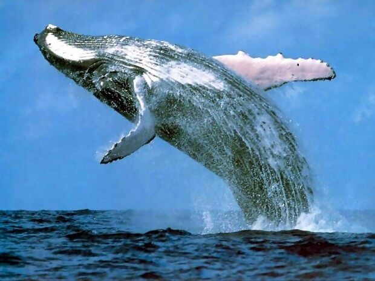

Это самое большое в мире животное обитает в морских водах, относится к отряду китообразных и усатым китам. Достигает более 33 м в длину,а вес превышает 150 тонн. Вы представте, только один язык этого крупного синего кита может весить до 4 тонн. Обитает как в кругополярных, так и в тропических морях. Питается в основном крилем, реже крупными рачками, головоногими и мелкой рыбой. У таких китов слабыми являются зрение, обоняние и чувство вкуса. Но хорошо развиты слух и осязание. Это миролюбивое и чрезвычайно умное существо подвергается уничтожению из-за массы, жира и китового уса.

P.S На этом все